|
Hello! My name is Fanqi Wan, and I am a final-year MS student at Sun Yat-sen University, advised by Prof. Xiaojun Quan. Before this, I received my Bachelor's degree from Xi'an Jiaotong University. Previously, I conducted my internship at Tencent AI Lab (2023.03-2024.05), ByteDance Seed (2024.06-2025.02), and Alibaba Tongyi (2025.03-now). Email / CV / Google Scholar / Semantic Scholar / GitHub / HF / X |

|
|
My main research interests focused on deep learning for natural language generation. Previously, my work primarily focused on dialogue systems. After the emergence of large language models (LLMs), my research direction shifted towards LLM alignment (e.g., domain-specific LLMs, factual LLMs, self-improving LLMs, long-context LLMs, reasoning LLMs) and knowledge fusion (e.g., combining the strengths of LLMs with diverse structures/scales/functionarities). Representative papers are highlighted. |
| Knowledge Fusion | |
| 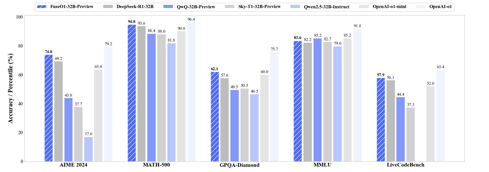 |
Fanqi Wan, Longguang Zhong, Ziyi Yang, Weizhou Shen, Xinting Huang Tech Report, 2025 [GitHub] / [HF] / [Paper] / [r/LocalLLaMA] / [Mergekit Support] FuseO1-Preview is our initial endeavor to enhance the System-II reasoning capabilities of large language models (LLMs) through innovative model fusion techniques. The resulted FuseO1-DeepSeekR1-QwQ-SkyT1-32B-Preview achieves a Pass@1 accuracy of 74.0 on AIME24, demonstrating significant performance improvements compared to the OpenAI o1-preview (44.6) and OpenAI o1-mini (63.4), even approaching OpenAI o1 (79.2). |
| 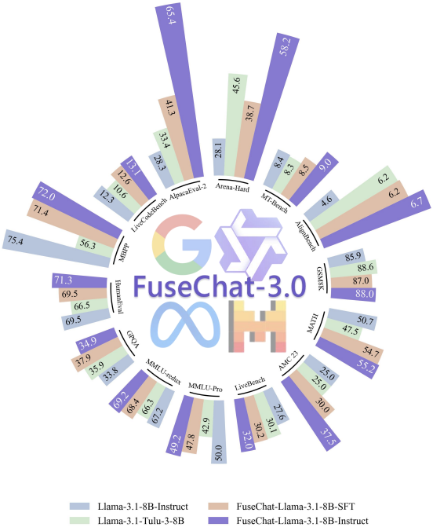 |
Ziyi Yang, Fanqi Wan, Longguang Zhong, Canbing Huang, Guosheng Liang, Xiaojun Quan ICLR SCI-FM Workshop, 2025 [GitHub] / [HF] / [Paper] / [HF Daily Papers] / [r/LocalLLaMA] / [魔搭社区] / [Blog] / [Website] We introduce FuseChat-3.0, a suite of large language models (LLMs) developed by integrating the strengths of heterogeneous source LLMs into more compact target LLMs. Using Llama-3.1-8B-Instruct as the target model, it demonstrates remarkable gains of 37.1 points and 30.1 points on AlpacaEval-2 and Arena-Hard, respectively. |
| 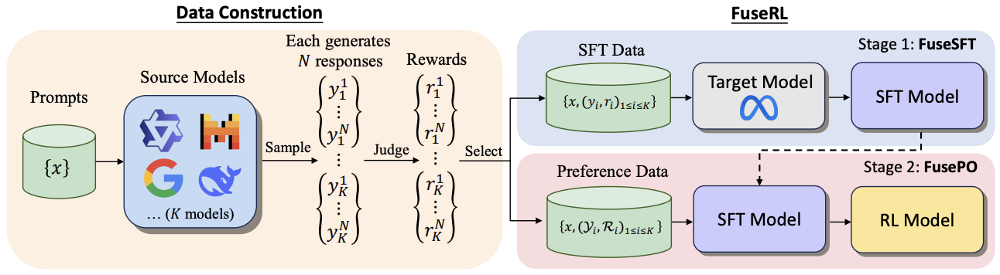 |
Longguang Zhong*, Fanqi Wan*, Ziyi Yang, Guosheng Liang, Tianyuan Shi, Xiaojun Quan Tech Report, 2025 [Paper] We propose FuseRL, a novel two-stage framework comprising FuseSFT and FusePO to maximize the utilization of source LLMs. Using Llama-3.1-8B-Instruct as the target model, our approach achieves state-of-the-art performance among 8B LLMs on AlpacaEval-2 and Arena-Hard. |
| 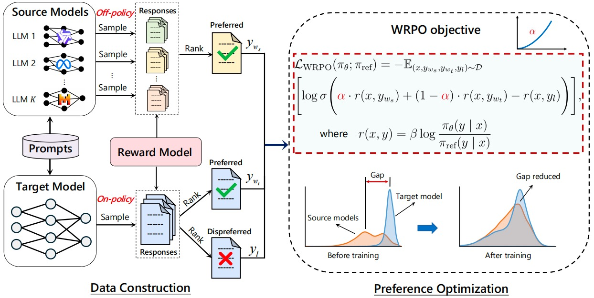 |
Ziyi Yang*, Fanqi Wan*, Longguang Zhong, Tianyuan Shi, Xiaojun Quan ICLR, 2025 [GitHub] / [HF] / [Paper] / [HF Daily Papers] We propose Weighted-Reward Preference Optimization (WRPO), which leverages preference optimization between the source LLMs and the target LLM to transfer their capabilities effectively. WRPO achieves a LC Win Rate of 55.9% against GPT-4-Preview-1106 on AlpacaEval-2 and a Win Rate of 46.2% against GPT-4-0314 on Arena-Hard. |

|
Fanqi Wan, Longguang Zhong, Ziyi Yang, Ruijun Chen, Xiaojun Quan Tech Report, 2024 [GitHub] / [HF] / [Paper] / [Featured by AK] / [HF Daily Papers] / [机器之心] We propose FuseChat, an extended framework of FuseLLM to integrate the collective knowledge and individual strengths of multiple structure- and scale-varied chat LLMs into a more powerful chat LLM. FuseChat-7B is comparable to the larger Mixtral-8x7B-Instruct and and approaches GPT-3.5-Turbo-1106 on MT-Bench. |
| 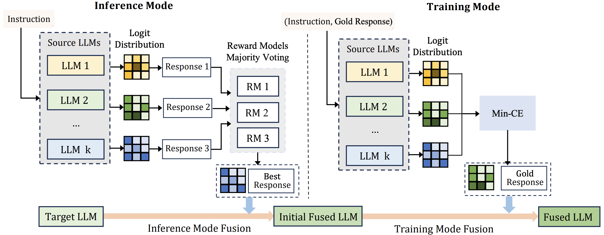 |
Tianyuan Shi, Fanqi Wan, Canbin Huang, Xiaojun Quan, Chenliang Li, Ming Yan, Ji Zhang Tech Report, 2024 [GitHub] / [HF] / [Paper] We introduce a novel approach that enhances the fusion process by incorporating both the training and inference modes from multiple structurally diverse LLMs. |

|
Fanqi Wan, Xinting Huang, Deng Cai, Xiaojun Quan, Wei Bi, Shuming Shi ICLR, 2024 [GitHub] / [HF] / [Paper] / [Featured by elvis] / [Featured by AIDB] / [机器之心] We propose FuseLLM to create a unified model that combines the distinctive strengths of multiple structurally diverse LLMs. FuseLLM-7B surpasses Llama-2-7B on 12 benchmarks, including commonsense, reasoning, question-answering, and code generation. |
| LLM Alignment | |
| 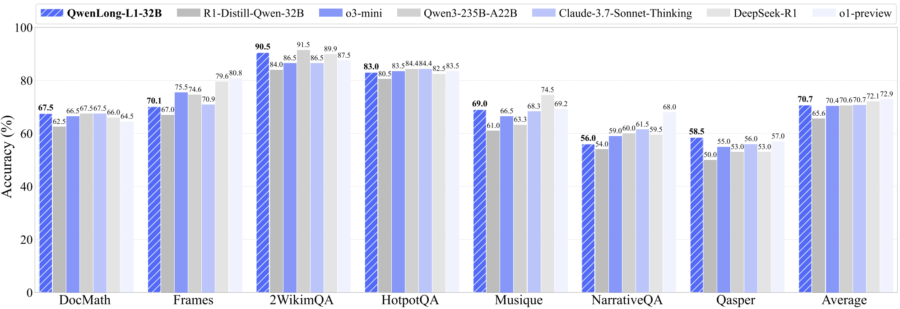 |
Fanqi Wan, Weizhou Shen, Shengyi Liao, Yingcheng Shi, Chenliang Li, Ziyi Yang, Ji Zhang, Fei Huang, Jingren Zhou, Ming Yan Tech Report, 2025 [GitHub] / [HF] / [Paper] / [r/LocalLLaMA] / [HF Daily Papers] We propose QwenLong-L1, a framework that adapts short-context LRMs to long-context scenarios via progressive context scaling. QwenLong-L1-32B outperforms flagship LRMs like OpenAI-o3-mini and Qwen3-235B-A22B, achieving performance on par with Claude-3.7-Sonnet-Thinking |
| 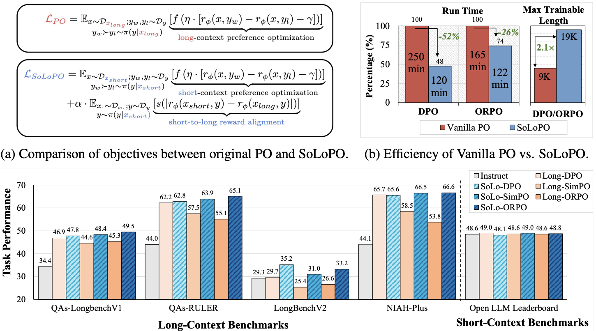 |
Huashan Sun, Shengyi Liao, Yansen Han, Yu Bai, Yang Gao, Cheng Fu, Weizhou Shen, Fanqi Wan, Ming Yan, Ji Zhang, Fei Huang Tech Report, 2025 [Paper] We propose a framework named Short-to-Long Preference Optimization (SoLoPO), decoupling long-context preference optimization (PO) into two components: short-context PO and short-to-long reward alignment (SoLo-RA), supported by both theoretical and empirical evidence. |
| 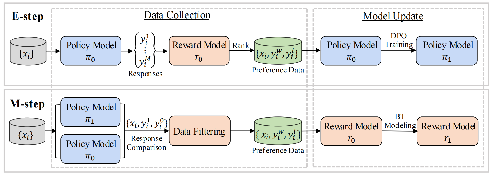 |
Tianyuan Shi, Canbin Huang, Fanqi Wan, Longguang Zhong, Ziyi Yang, Weizhou Shen, Xiaojun Quan, Ming Yan ACL, 2025 [Paper] we propose Mutual-Taught, a self-training method that iteratively improves both the policy model and reward model without requiring additional human annotation. |
| 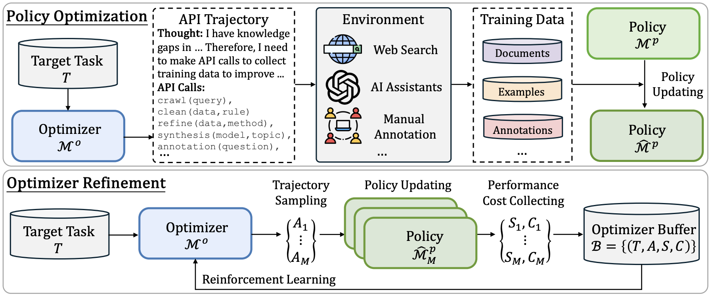 |
Fanqi Wan, Deng Cai, Shijue Huang, Xiaojun Quan, Mingxuan Wang Tech Report, 2025 [Paper] We propose ADS, a self-improving framework where models can invoke APIs to crawl and/or generate tailored datasets from various resources and environments, and retrain themselves. |
| 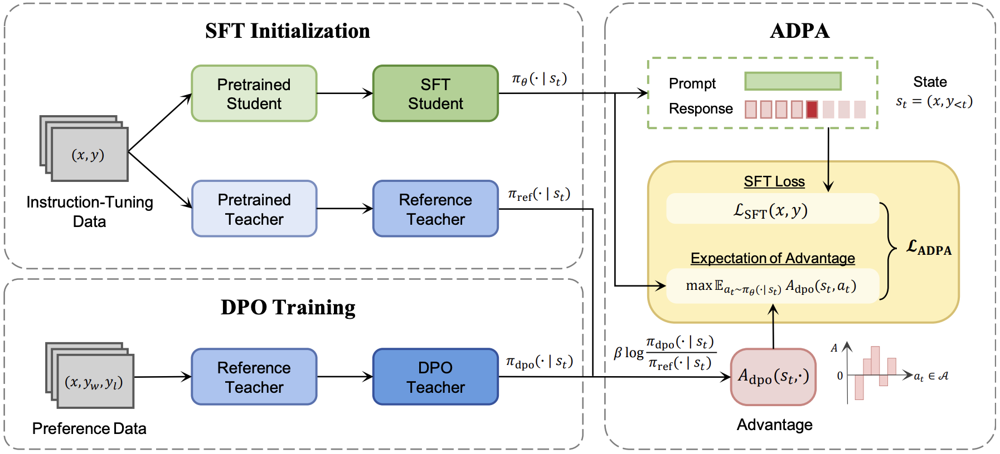 |
Shiping Gao, Fanqi Wan, Jiajian Guo, Xiaojun Quan, Qifan Wang ICLR Spotlight, 2025 [GitHub] / [Paper] / [Paper Weekly] We propose Advantage-Guided Distillation for Preference Alignment (ADPA), which leverages an advantage function from the aligned teacher to deliver more nuanced, distribution-level reward signals for the student's alignment. |
| 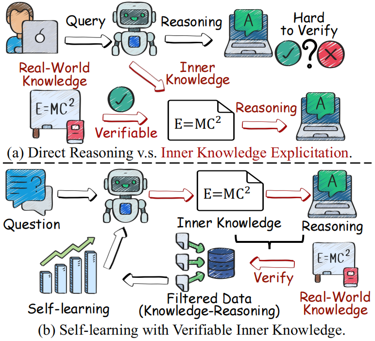 |
Shijue Huang, Wanjun Zhong, Deng Cai, Fanqi Wan, Chengyi Wang, Mingxuan Wang, Mu Qiao, Ruifeng Xu AAAI, 2025 [Paper] We introduces a Self Knowledge Explicitation Learning (SKE-Learn) framework, which equips the LLMs with meta-skills to explicitly extract, verify and utilize inner knowledge for reasoning. |

|
Ruijun Chen, Jiehao Liang, Shiping Gao, Fanqi Wan, Xiaojun Quan EMNLP Findings, 2024 [Paper] We introduce self-evolution fine-tuning for policy optimization, which eliminates the need for annotated data samples during alignment. |

|
Fanqi Wan, Xinting Huang, Leyang Cui, Xiaojun Quan, Wei Bi, Shuming Shi EMNLP, 2024 [GitHub] / [HF] / [Paper] We introduce Knowledge Consistent Alignment to verify and minimize the knowledge inconsistency between external knowledge in the alignment data and the intrinsic knowledge embedded in foundation LLMs, thus mitigating hallucinations before alignment. |

|
Fanqi Wan, Xinting Huang, Tao Yang, Xiaojun Quan, Wei Bi, Shuming Shi EMNLP, 2023 [GitHub] / [HF] / [Paper] / [Paper Weekly] We propose a novel approach to enhance the domain-specific instruction coverage by utilizing LLMs to explore the domain space from both breadth and depth automatically. Explore-Instruct outperforms Self-Instruct in three specific domains. |
| Dialogue Systems | |

|
Weizhou Shen, Yingqi Gao, Canbin Huang, Fanqi Wan, Xiaojun Quan, Wei Bi EMNLP, 2023 [GitHub] / [Paper] We introduce maximal marginal likelihood for retriever training to address the retrieval-generation misalignment in end-to-end task-oriented dialogue systems. |

|
Fanqi Wan, Weizhou Shen, Ke Yang, Xiaojun Quan, Wei Bi ACL, 2023 [GitHub] / [HF] / [Paper] We propose a multi-grained knowledge retriever and introduce a novel distillation objective for retriever training. MAKER achieves SOTA performance on MultiWOZ 2.1 and CamRest with both condensed KB and full KB. |
| Misc. | |
| 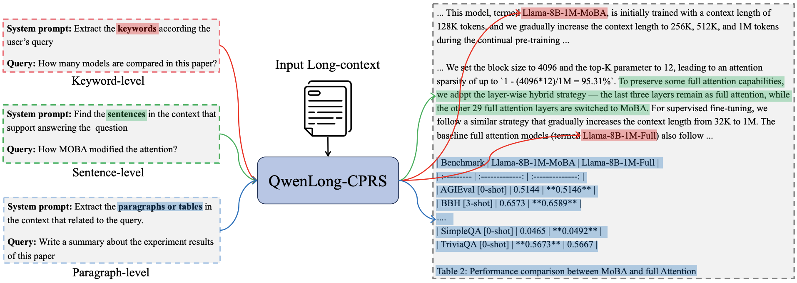 |
Weizhou Shen, Chenliang Li, Fanqi Wan, Shengyi Liao, Shaopeng Lai, Bo Zhang, Yingcheng Shi, Yuning Wu, Gang Fu, Zhansheng Li, Bin Yang, Ji Zhang, Fei Huang, Jingren Zhou, Ming Yan Tech Report, 2025 [GitHub] / [HF] / [Paper] We propose QwenLong-CPRS, which implemented through a novel dynamic context optimization mechanism to enable multi-granularity context compression guided by natural language instructions, achieving both efficiency gains and improved performance. |

|
Longguang Zhong, Fanqi Wan, Ruijun Chen, Xiaojun Quan, Liangzhi Li ACL Findings, 2025 [GitHub] / [Paper] We propose a training-free structured pruning approach for fine-grained LLMs pruning. |

|
Tao Yang, Tianyuan Shi, Fanqi Wan, Xiaojun Quan, Qifan Wang, Bingzhe Wu, Jiaxiang Wu EMNLP Findings, 2023 [GitHub] / [Paper] We propose a novel method for zero-shot personality detection in a multi-turn dialogue manner. |

|
Jinghao Deng, Fanqi Wan, Tao Yang, Xiaojun Quan, Rui Wang ACL Findings, 2023 [GitHub] / [Paper] We propose a novel method that incorporates cluster information into contrastive learning for unsupervised sentence representation learning. |
|
MS Student in Computer Science, Sun Yat-sen University (2022.9-now). Bachelor of Automation, Xi'an Jiaotong University (2018.9-2022.6). |
|
Research Intern at NLP, Alibaba Tongyi, supervised by Dr. Ming Yan. (2025.3-now). Research Intern at Horizon, ByteDance Seed, supervised by Dr. Deng Cai. (2024.6-2025.2). Research Intern at NLPC, Tencent AI Lab, supervised by Dr. Xinting Huang and Dr. Wei Bi. (2023.3-2024.5). Commercial Projects on E-Commerce Platforms, Vipshop, supervised by Dr. Rui Wang. (2022.4-2023.1). |
|
2nd Prize on 2023 Xingzhi Cup Deep Learning Model Interpretability Task. (Team Leader) [Task] 2nd Prize on 2022 IFLYTEK AI Developer Competition Paper Abstracts Classification Task. (Team Leader) [Task] 3nd Prize on 2022 Ali Lingjie E-commerce Search Algorithm Competition. (Team Leader) [Task] |
|
NeurIPS Reviewer, 2024-. ICLR Reviewer, 2025-. AISTATS Reviewer, 2025-. ACL ARR Reviewer, 2025-. |
|
National Scholarship, Sun Yat-sen University, 2023. Outstanding Award for Tencent AI Lab Rhino-Bird Focused Research Program, Tencent, 2023. Excellent Graduate Students, Xi'an Jiaotong University, 2022. National Scholarship, Xi'an Jiaotong University, 2018. |
|
Website's code is from Jon Barron. |